With a desperate attack from Prime-Heart, Vicious' rampage was stopped, however his consciousness began collapsing. Amidst that, Visas began asking himself what exactly were 'Fear', 'Sorrow', 'Anger', and 'Joy'; and what was exactly this power that had swollen so much it was engulfing the entire world. Unable to find the answers, his consciousness headed straight towards its collapse. Even if he was able to recover his emotions, the world might just be destroyed once again. If that was the case, then wouldn't it be better to just disappear...? During Visas' soliloquy, some voices resounded in disagreement. «Having made it all the way here, I don't want to disappear», «It's so sad that this beautiful world stays broken», «Let everything disappear...».
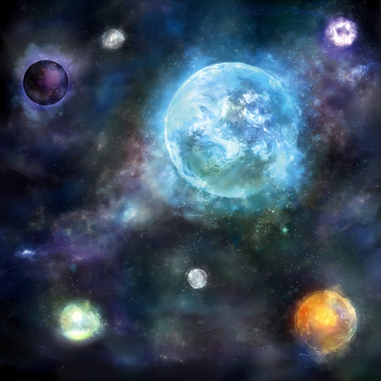
It was the voices of his split personalities. Although they had grown and become independent, they were his own voices as well: the 'Fear' that fought alongside him, and feared the loss of its comrades more than anything else. The 'Sorrow' that awakened him from his rampage thanks to the light of Shangri-La. And the 'Anger' that, despite having been suppressed, still longed for destruction... he had strong feelings for each of them, yet these violent emotions that kept growing to no end were not something he could control. As Visas was about to take a dark decision, yet another voice was heard.
«Do not hesitate, have the resolve to break»
It was the voice that saved him: 'Joy'. The man who had continuously faced negative emotions in Shangri-La continued speaking: not to be manipulated by his strong emotions, but to turn them into power. In order to create a new self, he broke his weak self.
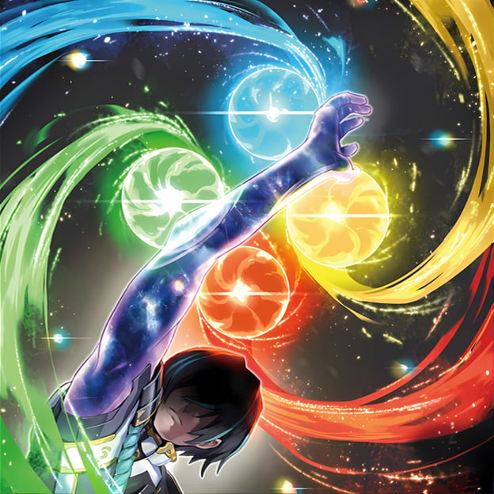
With those words, Visas resolved to reunite as one with his split personalities once again. With the very last remaining strength he had, he touched the 4 brightly-shining spheres, and the 4 emotions flowed into him. Strong feelings about to overflow, and an intense power. And yet, there was no uneasiness. With 'Anger' finally having calmed down from its desire to destroy the world and rebuild it with its own hands, Visas, along with 'Fear', 'Sorrow', and 'Joy', asked it... why did it try to become "Visas"? And to that, 'Anger' replied it was because it was impossible for scum like them to defeat 'him'. Who could this 'him' possibly refer to...? Anger's strength weakened, unable to answer this new enigma. Perhaps it sensed that this resistance was futile. 'Anger' declared: «Since I lost to you, I will not tolerate a second defeat. If you happen to lose, the next time I will be fighting as Visas», and then it returned into Visas. Although Visas now faced a new enigma, he accepted those words. The man who used to have no light in his eyes had finally recovered a defined self.
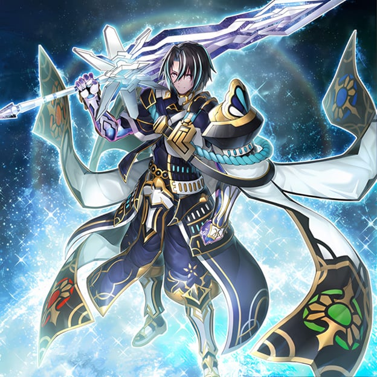
Visas, being restored, moved to awaken from his consciousness to the real world, and rebuild the world that he had damaged. He wanted to create a world where everyone could coexist, and created one large water planet: "Amritara". He gave it that name, after a glimmer that might as well have been his own, and headed towards this planet. In the middle of this world where the nature of "Reichphobia", the waters of "Perlereino", and the machines of "Wraitsoth" were mixed together, the beautiful great tree of "Calarium" was standing.
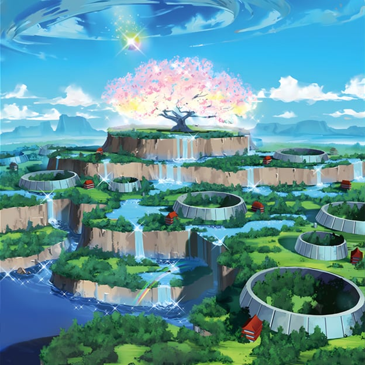
And in front of it, the representatives of the three races, Scareclaw, Tearlaments, and Kashtira, welcomed Visas as he descended. They recognized him as their king, after he had become their common lord. The conflicts had concluded, but he had not finished visiting all of the worlds, and he still had concerns about the words of 'Anger'. Visas resolved to depart to a new world.
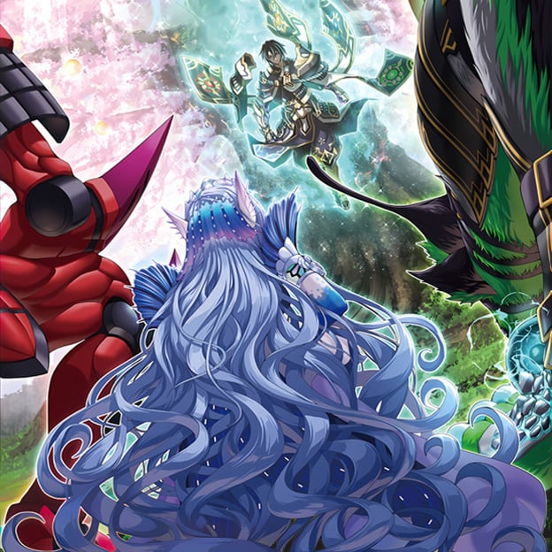
In some alternate dimension impossible to locate, the silhouette of a man that witnessed Visas' struggles from beginning to end was present. His name was "Veda", the one who knew everything. As he endlessly kept track of Visas' movements, he pondered, while reminiscing events that not even Visas was aware of. Beginning in emptiness, at a certain point, he feared, at a certain point, he lamented in sorrow, at a certain point, he rampaged in anger, and at a certain point, he was joyful and in high spirits. Green, blue, red, yellow... with each color, a different result was achieved, and even the water that he had obtained reflected various changes. Even though he was the one that split him, he could not anticipate that he would turn out this way. He had finally made it this far. It was time to put that power to the test... using the birth of the water planet as an opportunity, the man finally made his move.
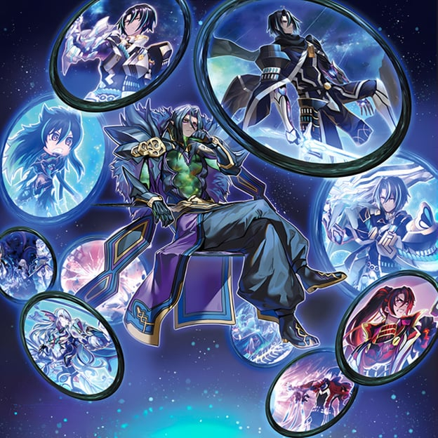
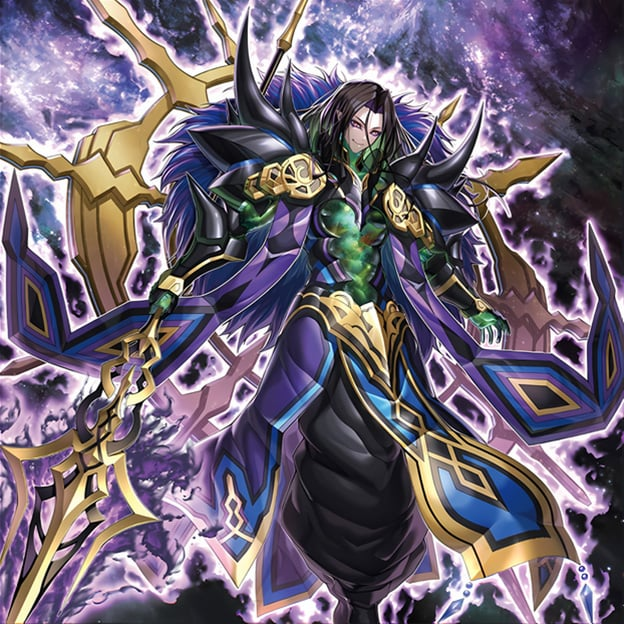
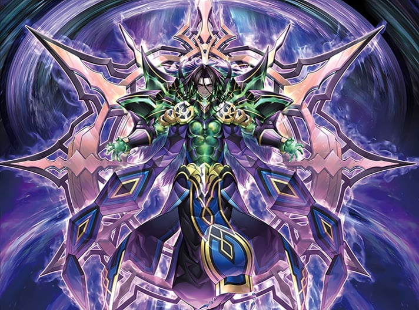
Veda begun by attacking the great tree of "Calarium". A vivid light was unleashed from Veda, and in the blink of an eye, all of the land of "Amritara" began to collapse, including the great tree. Without flinching after having lost what they had recovered in the blink of an eye, Visas and the rest joined the fight.
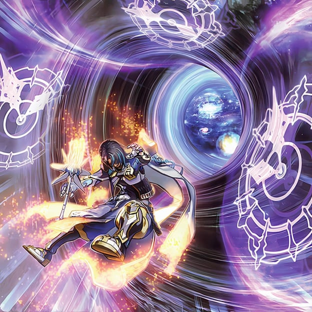
An evolved Visas wielded a great sword, and the mermaid "Trisukta", who achieved her evolution through the power of the three tribes, followed right after him. The intensity of the fight between Visas and Veda only grew stronger as time passed, and it was feared that at this rate the water planet would be destroyed.
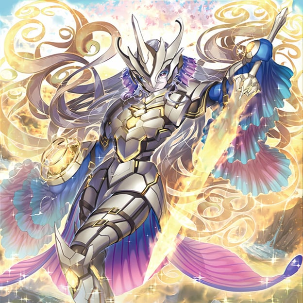
Visas decided to move the fight into space in order to protect the planet. However, the intensity of the fight kept expanding, and Visas' large sword clashing with Veda's trident was creating shockwaves that with each attack felt like they were about to shatter the neighboring planets. Having personally experienced Visas' growth, a fearless grin appeared in Veda's face, as Visas was unable to understand his intentions. Amidst this seemingly endless stalemate of attack and defense, Veda activated one of his secret techniques. And through this technique, which had been activated so many times, Visas once again became an innocent new star...
Thus, the end of one era was marked, and a new era had begun...
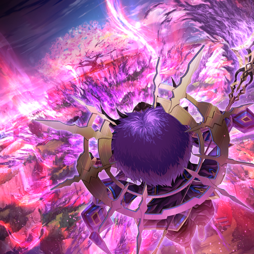
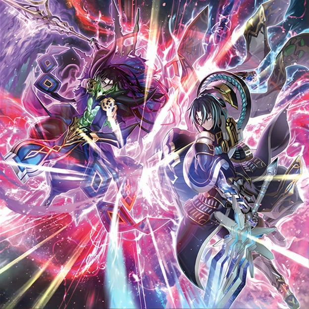
Visas woke up, yet his appearance was once again different from before. There were no traces of the blows he had exchanged in the past, his eyes fiercely pierced the skies, and he held a thin sword... among so many changes, there were some things that did not change. Keeping fragments of the feelings he has fostered so far close to his chest, Visas moved forward through a familiar, devastated planet. The one who lied waiting for him was none other than the king of 'Fear'.
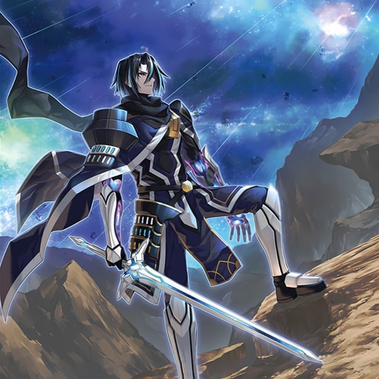
As they exchanged gazes in their reunion, the king sighed: «So it has come to this again, huh.» How well did they understand the meaning of 'again'? They themselves had no idea. All they could do was to cross swords. During this fight, the king remembered memories of which he had no recollection: the sensation of having swung his fists... hollow eyes, a small version of himself. It was but a brief moment, but it was plenty of time to decide the outcome. Even though his prey had changed, he lost again... 'again'...? No, after all, I was the one who taught him this swordsmanship. As the king mumbled that, Visas extended his hand towards him. This time, let's fight together. The fear he felt before was no longer there. On the contrary, there was another self that felt relieved. The king, surprised by this other self, replied to this extended hand with «that doesn't sound too bad».
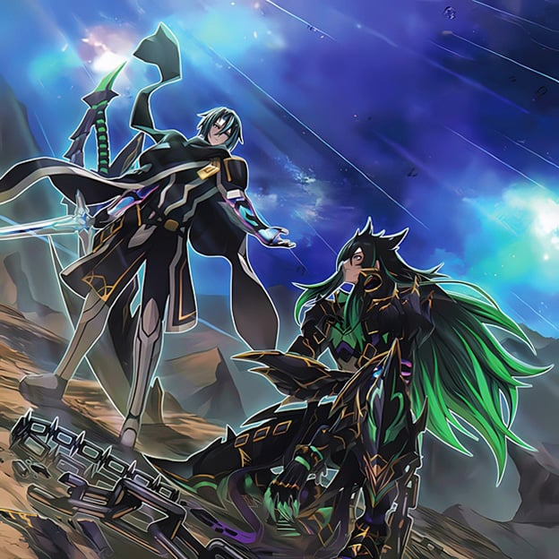